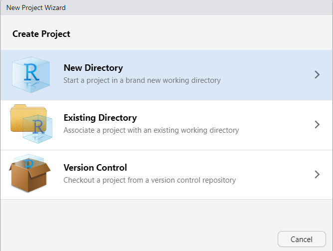
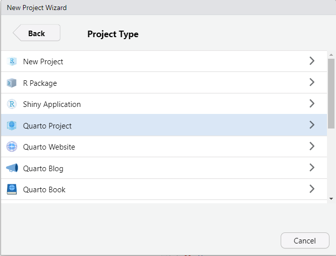
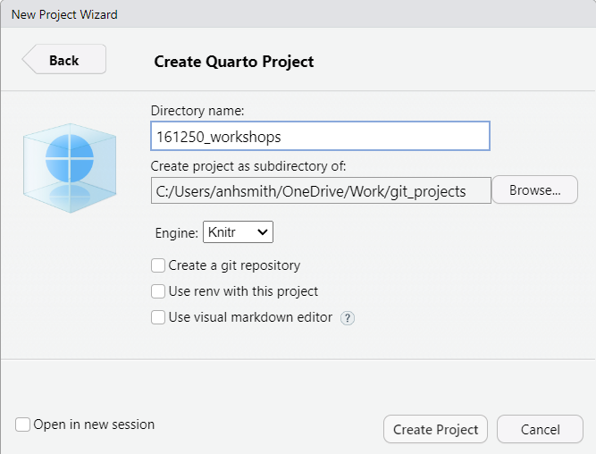
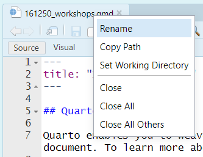
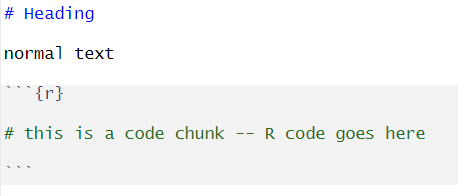
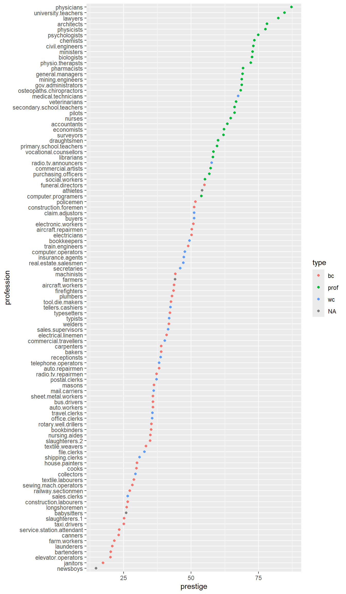

Code
library(car)
data(Prestige)It is a good idea to get into the habit of using Quarto projects, rather than just R scripts. Here is a step-by-step guide to creating a project for your workshops. You don’t have to use projects, but they are very useful.

If you haven’t already, make a directory on your computer where you want to keep your code for this course.
Make a new project. Select the “Project” button at the top-right of Rstudio, and select “New Project…”.




The project should now be created, and you’ll likely have an open *.qmd file (something like “161250_workshops.qmd”) in the top-right window of Rstudio. We want to make a *.qmd file for this workshop.

Now you have a document for your Workshop 2 work. You can:
Like so:

There are lots of tutorials online covering the basics of Quarto, and we’ll discuss them during our own workshops. Here are a couple for starters:
https://quarto.org/docs/get-started/hello/rstudio.html
https://www.youtube.com/watch?v=c654j7aQjcg
There are many advantages of Quarto projects. One is that you can put datasets into the project folder, and they’ll be easily accessible within your project, without having to worry about file paths.
You can easily open a recent past projects via the “Projects” button on the top-right of Rstudio.
PrestigeAs you work through this workshop, you can copy the code and paste it into a code chunk. Write notes and observations to your self as you go.
We will be using a well-known dataset called Prestige from the car R package. This dataset deals with prestige ratings of Canadian occupations. The Prestige dataset has 102 rows and 6 columns. Each row (or ‘observation’) is an occupation.
This data frame contains the following columns:
education - Average education of occupational incumbents, years, in 1971.
income - Average income of incumbents, dollars, in 1971.
women - Percentage of incumbents who are women.
prestige - Pineo-Porter prestige score for occupation, from a social survey conducted in the mid-1960s.
census - Canadian Census occupational code.
type - Type of occupation. A factor with levels: bc, Blue Collar; prof, Professional, Managerial, and Technical; wc, White Collar. (includes four missing values).
First we’ll load the data. The dataset sits in the car package, so you need to load the car package first.
library(car)
data(Prestige)Draw a bar chart for type. These plots show the count or relative frequency of blue collar (bc), professional (prof), and white collar (wc) professions in the dataset.
library(tidyverse)
p <- Prestige |>
ggplot() +
aes(type) +
geom_bar()
pOr with plotly (which works for HTML, not for PDF)
library(plotly)
ggplotly(p)Or with old-style R plot
# or
library(car)
barplot(table(Prestige$type))Draw a histogram of prestige.
Below demonstrates the flexibility of ggplot code. You can specify the data argument by piping it into ggplot, or by putting it as an argument to ggplot or a geom_. Likewise, the mapping or aes information, which determines which variables are used where, can be added as an extra line or specified inside the ggplot or geom_ function.
Prestige |>
ggplot() +
aes(x = prestige) +
geom_histogram()Now, this histogram, where the number of bins has been chosen for us, looks a bit “spiky” to my eye. You can control the number of bins by adding an argument bins = 10.
Prestige |>
ggplot() +
aes(x = prestige) +
geom_histogram(bins=10)ggplot is very flexible as to where you put the data and the aes information; all of these methods give the same result.
Prestige |>
ggplot() +
aes(x = prestige) +
geom_histogram(bins=10)ggplot(
data = Prestige,
mapping = aes(x = prestige)
) +
geom_histogram(bins=10)ggplot(Prestige) +
aes(x = prestige) +
geom_histogram(bins=10) ggplot() +
geom_histogram(
data = Prestige,
mapping = aes(x = prestige),
bins = 10
)# or
# library(plotly)
# p <- Prestige |>
# ggplot() +
# aes(prestige) +
# geom_histogram(bins=10)
#
# ggplotly(p)
# or
# hist(Prestige$prestige)Now let’s display the prestige scores for each profession as a dot plot.
Note that I’m including the code-chunk option #| fig-height: 12 at the beginning of my code chunk so that the plot is big enough to show all the professions without overlap.
Prestige |>
ggplot() +
aes(x = rownames(Prestige), y = prestige) +
geom_point() +
coord_flip()
What a mess!
We can tidy it up by ordering the professions on the plot according to prestige. First, we move the professions from rownames to a variable. Then, we fct_reorder the professions using the prestige scores. Then, the resulting data gets piped into ggplot.
Prestige |>
rownames_to_column(var = "profession") |>
mutate(
profession = fct_reorder(profession, prestige)
) |>
ggplot() +
aes(x = profession, y = prestige, colour = type) +
geom_point() +
coord_flip()
Obtain some summary statistics for prestige. There are a few options for this.
summary(Prestige) education income women prestige
Min. : 6.380 Min. : 611 Min. : 0.000 Min. :14.80
1st Qu.: 8.445 1st Qu.: 4106 1st Qu.: 3.592 1st Qu.:35.23
Median :10.540 Median : 5930 Median :13.600 Median :43.60
Mean :10.738 Mean : 6798 Mean :28.979 Mean :46.83
3rd Qu.:12.648 3rd Qu.: 8187 3rd Qu.:52.203 3rd Qu.:59.27
Max. :15.970 Max. :25879 Max. :97.510 Max. :87.20
census type
Min. :1113 bc :44
1st Qu.:3120 prof:31
Median :5135 wc :23
Mean :5402 NA's: 4
3rd Qu.:8312
Max. :9517 library(psych)
describe(Prestige) vars n mean sd median trimmed mad min max
education 1 102 10.74 2.73 10.54 10.63 3.15 6.38 15.97
income 2 102 6797.90 4245.92 5930.50 6161.49 3060.83 611.00 25879.00
women 3 102 28.98 31.72 13.60 24.74 18.73 0.00 97.51
prestige 4 102 46.83 17.20 43.60 46.20 19.20 14.80 87.20
census 5 102 5401.77 2644.99 5135.00 5393.87 4097.91 1113.00 9517.00
type* 6 98 1.79 0.80 2.00 1.74 1.48 1.00 3.00
range skew kurtosis se
education 9.59 0.32 -1.03 0.27
income 25268.00 2.13 6.29 420.41
women 97.51 0.90 -0.68 3.14
prestige 72.40 0.33 -0.79 1.70
census 8404.00 0.11 -1.49 261.89
type* 2.00 0.40 -1.36 0.08describeBy(education + income + women + prestige ~ type,
data = Prestige)
Descriptive statistics by group
type: bc
vars n mean sd median trimmed mad min max
education 1 44 8.36 1.16 8.35 8.32 1.14 6.38 10.93
income 2 44 5374.14 2004.33 5216.50 5338.56 2275.05 1656.00 8895.00
women 3 44 18.97 26.15 4.72 14.48 7.01 0.00 90.67
prestige 4 44 35.53 10.02 35.90 35.46 11.34 17.30 54.90
range skew kurtosis se
education 4.55 0.34 -0.76 0.18
income 7239.00 0.17 -1.00 302.16
women 90.67 1.36 0.51 3.94
prestige 37.60 0.05 -1.03 1.51
------------------------------------------------------------
type: prof
vars n mean sd median trimmed mad min max
education 1 31 14.08 1.39 14.44 14.16 1.22 11.09 15.97
income 2 31 10559.45 5422.82 8865.00 9700.04 3955.58 4614.00 25879.00
women 3 31 25.51 28.37 11.68 21.03 13.86 0.58 96.12
prestige 4 31 67.85 8.68 68.40 67.34 9.19 53.80 87.20
range skew kurtosis se
education 4.88 -0.47 -0.93 0.25
income 21265.00 1.37 1.36 973.97
women 95.54 1.14 -0.04 5.09
prestige 33.40 0.36 -0.67 1.56
------------------------------------------------------------
type: wc
vars n mean sd median trimmed mad min max
education 1 23 11.02 0.92 11.13 11.03 0.68 9.17 12.79
income 2 23 5052.30 1944.32 4741.00 4960.53 2342.51 2448.00 8780.00
women 3 23 52.83 33.11 56.10 53.19 47.77 3.16 97.51
prestige 4 23 42.24 9.52 41.50 41.61 8.60 26.50 67.50
range skew kurtosis se
education 3.62 -0.20 -0.27 0.19
income 6332.00 0.44 -1.18 405.42
women 94.35 -0.10 -1.58 6.90
prestige 41.00 0.63 0.18 1.98Make a boxplot of prestige ~ type:
Prestige |>
ggplot() +
aes(y=prestige, x=type) +
geom_boxplot()# or
# library(plotly)
# p <- Prestige |> ggplot() +
# aes(y=prestige, x=type) + geom_boxplot()
# ggplotly(p)
# or
# library(lattice)
# bwplot(prestige ~ type, data=Prestige)
# as violin plots
Prestige |>
ggplot() +
aes(y=prestige, x=type) +
geom_violin()# Or put it all together
Prestige |>
ggplot() +
aes(y=prestige, x=type) +
geom_violin() +
geom_boxplot(col = 2, alpha = .2) +
geom_jitter(alpha = .2, width = .2, height = 0, colour = 4)Obtain the Empirical Cumulative Distribution Function (ECDF) graphs of prestige ~ type:
Prestige |>
ggplot() +
aes(prestige, colour=type) +
stat_ecdf()Prestige |>
ggplot() +
aes(prestige) +
stat_ecdf() +
facet_wrap(~type)Prestige |>
ggplot() +
aes(
x = prestige, # these aes settings are used
col = type # by both geoms
) +
geom_density(
aes(fill = type), # the 'fill' aes goes here because
alpha = .2 # geom_rug doesn't use 'fill'
) +
geom_rug()With which plot – the ECDF or the density plot – is it easier to compare the distributions of prestige scores among these groups?
Obtain the {0.05, 0.1, 0.25, 0.5, 0.75, 0.9, 0.95} quantiles of prestige:
pr <- c(0.01, 0.05, 0.1, 0.25, 0.5, 0.75, 0.9, 0.95, 0.99)
Prestige |>
summarise(
probs = pr,
quants = quantile(prestige, pr)
)
# or simply
quantile(Prestige$prestige, pr)Obtain the scatter plot (with and without marginal boxplots) prestige vs. education :
library(ggExtra)
p1 <- Prestige |>
ggplot() +
aes(x = education, y = prestige) +
geom_point() +
geom_smooth(col = 2) +
geom_smooth(method = "lm", se = FALSE)
ggMarginal(p1, type="boxplot")library(car)
scatterplot(education ~ prestige, data = Prestige)The later plot will show prediction interval ribbon while the first plot will show the confidence interval ribbon.
Obtain the bubble or balloon plot prestige vs. education vs. income (income forming the bubble size):
library(ggplot2)
Prestige |>
ggplot() +
aes(x = education, y = prestige, size = income) +
geom_point()# or
library(plotly)
p <- Prestige |>
ggplot() +
aes(x = education, y = prestige, size = income) +
geom_point()
ggplotly(p)Obtain the contour plot prestige vs. education vs. income :
library(plotly)
plot_ly(type = 'contour',
x = Prestige$education,
y = Prestige$income,
z = Prestige$prestige)To add axes labels and titles, try-
plot_ly(
Prestige,
type = 'contour',
x = Prestige$education,
y = Prestige$income,
z = Prestige$prestige
) |> layout(
title = 'Contour Plot of prestige scores',
xaxis = list(title = 'education'),
yaxis = list(title = 'income')
)We can also define our own function for the contour approximation.
library(modelr)
# make a smooth model
y.m = loess(prestige ~ education * income, data = Prestige)
# make a regular grid of all combinations of education and income
mygrid <- Prestige |>
data_grid(
education = seq_range(education, 50),
income = seq_range(income, 50)
) |>
# add predicted prestige using the smooth model
add_predictions(y.m, var = "predicted prestige")
# make ggplot contour plot
p <- mygrid |>
ggplot() +
aes(x = education, y = income, z = `predicted prestige`) +
geom_contour()
p# make a plotly version
library(plotly)
ggplotly(p)
# filled contour ggplot
mygrid |>
ggplot() +
aes(x=education, y=income, z=`predicted prestige`) +
stat_contour_filled()# or the older-style lattice graphs
library(lattice)
contourplot(`predicted prestige` ~ education * income,
data = mygrid,
cuts = 10, region = TRUE,
xlab = "education ", ylab = "income ")wireframe(`predicted prestige` ~ education * income,
data = mygrid,
cuts = 10, region = TRUE,
xlab = "education ", ylab = "income ")levelplot(`predicted prestige` ~ education * income,
data = mygrid,
cuts = 10, region = TRUE,
xlab = "education ", ylab = "income ")cloud(`predicted prestige` ~ income * education,
data = mygrid) Obtain an interactive 3-D plot of prestige vs. education vs. income using plotly.
plot_ly(
data = Prestige,
x = ~education,
y = ~income,
z = ~prestige) |>
add_markers() Create prestige ~ education | type graphs. That is, prestige ~ education grouped by type as colours and/or panels.
Prestige |>
ggplot() +
aes(x = education, y = prestige, colour = type) +
geom_point() +
facet_wrap(~ type)# or
# library(plotly)
#
# p <- Prestige |>
# ggplot() +
# aes(x = education, y = prestige, color = type) +
# geom_point() +
# facet_wrap(~ type)
#
# ggplotly(p)p <- Prestige |>
ggplot() +
aes(x = education, y = prestige, color = type) +
geom_point()
p# OR
#
# library(plotly)
# ggplotly(p)More graphing examples are here (R code file).